Jitter plots are a great way to make data more visible for actionable insight.
According to Inc.com, up to 73% of company data goes unused. Part of that comes down to actually understanding what it is, how to read it, and what can be done with it.
Also, according to a study, presentations using visuals are 43% more persuasive than ones without visuals.
In addition, according to MovableInk, it takes only 13 milliseconds for the brain to process an image. That’s 60,000 times faster than it takes to process text.
There are a ton of stats beyond these ones that state the importance of visuals. We have a big opportunity here to communicate meaningful insights visually with our BIM data and beyond in the AEC space.
My goal here is to illustrate how to showcase your findings for stakeholders. One of those ways is with a jitter plot, which I’ll show how to create in a bit. But first, a bit on why you might want to create one in specific instances.
The Benefits of Data Visualization in the AEC Industry
This ties back to the first post I made about the benefits of data visualization in the AEC industry. Many of the dashboards I see seem to have so much information and color all over the place. That might be great for your own use but could be overwhelming to stakeholders.
Maybe there are BIM models that are opening way too slowly. Maybe there is an excessive amount of project issues in one area you want to highlight. Or maybe, you’re trying to highlight business metrics with what kind of products/projects you are quoting. CAD managers especially might have technology business cases to make on ROI that could be shown visually for buy-in purposes. The possibilities are endless.
There are many techniques for “best practices” that I am learning from participating in the weekly MakeoverMonday data community exercises.
MakeoverMonday 2020 Week 2
With that being said, the MakeoverMonday community is back at it again with the 2020 Week 2 data set. This data set examines the amount of pesticides that are approved in the US and not approved in other countries/regions. Again, I know it’s an unrelated data set, but the “best practice” concepts can definitely apply in multiple situations. Often times, I find inspiration from going outside of my field. That’s how I found out about MakeoverMonday in the first place.
For those unfamiliar with how MakeoverMonday works, it starts out with a data set, some insight, and an original visualization. For the exercise, you are to find a data story and figure out how to improve upon visualizing it. In this way, you are constantly iterating new designs in your own work and collaborating with the community. I have learned so much so far!
The Original Data Visualization
In this case, here is what the original data visualization with the data set about banned pesticides looks like:
Looking at the original data visualization provided, I am able to assess what improvements I’d make to my own version of this data visualization.
I like the idea of trying to show amounts in each category. However, the category ranks aren’t sorted, so my eyes bounce around everywhere to see which categories are the largest. Also, I don’t like how actual countries/regions are all listed next to manually created/combined categories. Lastly, everything is the same color in this chart. What story is this trying to tell? It’s just data and color and there is nowhere specific for me to look at.
Using these observations, I can then go on to create my own iteration of a visualization.
Contrary to what some may believe, great data visualization isn’t just opening up the software and poking around. It takes time to prepare data, analyze data, find a story, and then plan the visualization. Most importantly, it needs to be displayed in a way that makes sense to the audience.
Working in Tableau Public
After I did an initial sketch and observation, I then opened up Tableau Public to create my data visualization.
It’s important to note that the data sets provided by the MakeoverMonday team tend to be cleaned up already. However, real life data is often messy, might have have inconsistencies, or might be incomplete.
For additional context, here is a snippet of the raw data. I find it helpful to show this, so you can more easily associate the non-visual aspects with visual aspects. I’m a very visual person, so this is an area I’m working on.
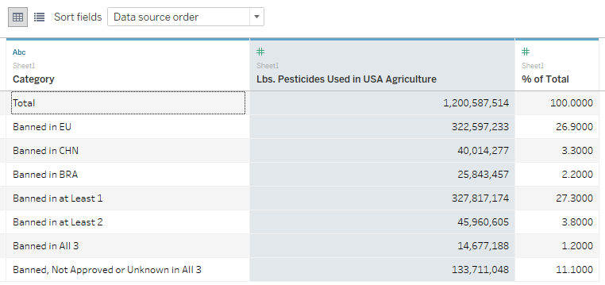
After connecting in the raw data in Tableau Public, I then went to the worksheet. My initial sketch showed the data in a scatter plot, so I set out to create that in Tableau.
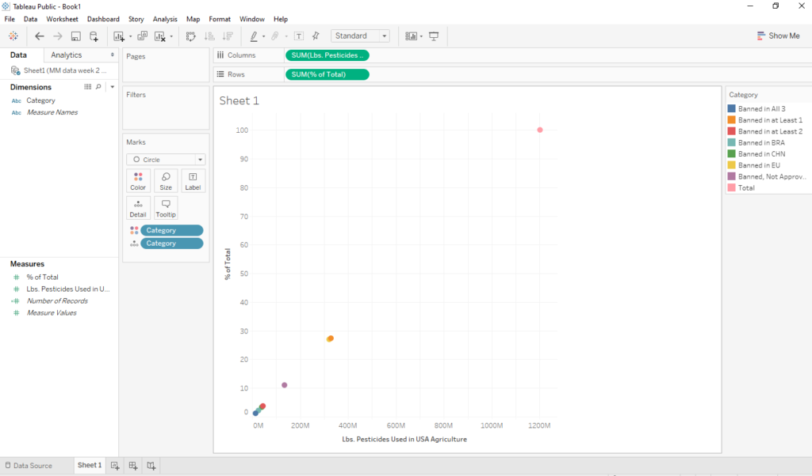
Here is what happens when you put the category pills on colors and details part of the marks card, the sum of pesticides pill on the columns shelf, and the sum of the percentages pill on the rows shelf.
Exploring the Data
From here I excluded items like “total” because it seemed redundant with all the other data there already. This helped narrow in on the story I wanted to tell. However, I started seeing that data points were still overlapping. I tried playing with shapes and size of shapes, but nothing was really making them stand alone quite yet.
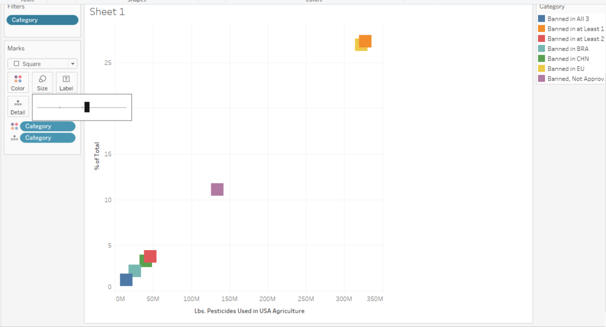
To help the situation, I learned how to create a jitter plot with a calculated field.
But first: What is a jitter plot?
Jitter Plot – How To
According to the Data + Science website, a jitter is a random index value that can be associated to data points. Then, when you create something such as a dot plot, the data points won’t overlap. Data points might be assigned numbers like 0, 1, 2, 3, 4 etc. to try to separate them out.
I wasn’t really aware of this before I started the week’s Makeover Monday exercise. Here is a step by step approach of how I applied my learning.
I first right clicked in the white space below measures to create a calculated field.
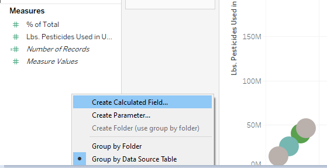
In the next window, I named the calculated field “Jitter,” so I could easily refer to it later. I then typed INDEX() in the box and clicked OK. It’s that simple!
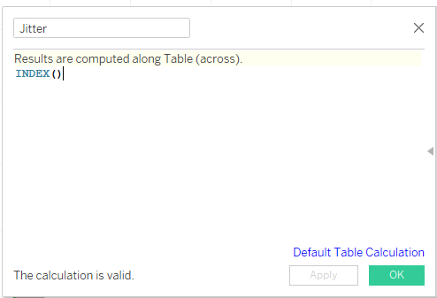
From here, I placed this new calculated field onto the columns shelf. I then clicked the little flyout arrow to get into the options. I specified Compute Using > Category. This assigns each category an index number to help space them out.
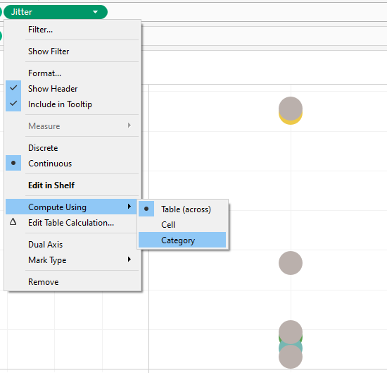
Display Options
After this, I played around with swapping rows and columns. This is what I love about exploring ways to do data visualizations. It’s often never “perfect” the first time you do something. I like to think of it like a clay pot you’re building and forming from the ground up.
Keep in mind that the following screenshots for formatting and display aren’t in a specific order.
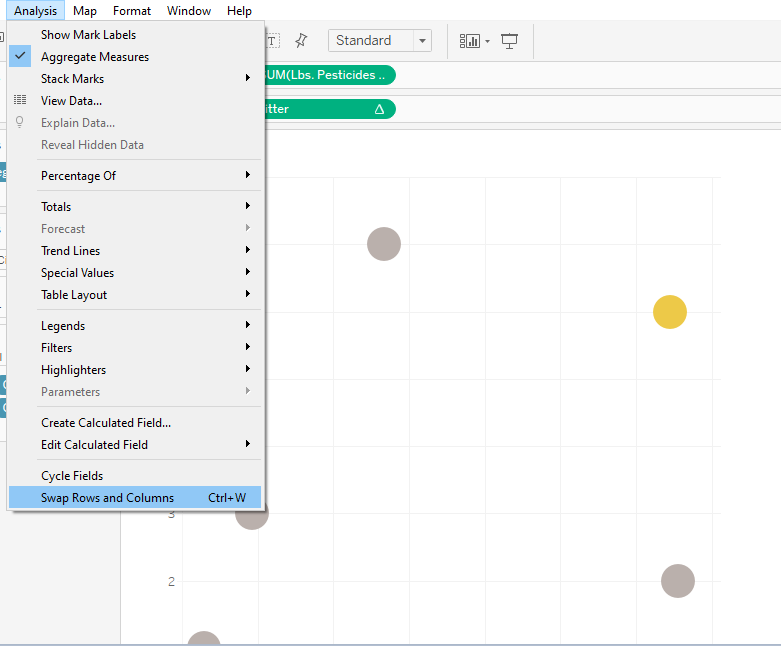
I then shifted my focus on how to highlight certain categories for the jitter plot. All the colors in the legend show up by default, which I think we are all pretty familiar with. However, with so many colors and categories, this is where the data story can get lost. For persuading action or drawing attention to insight, I want a smaller scope to focus on. I created groups for Europe, Brazil, and China. The rest would all stay gray.
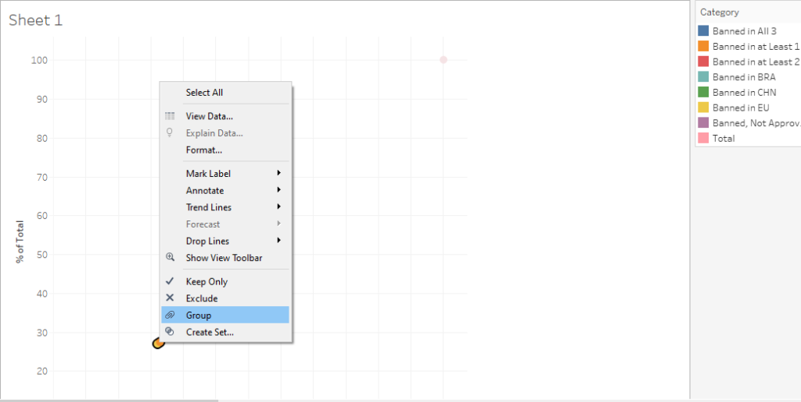
Formatting Options
Formatting and annotating are some of my favorite parts of doing data visualizations. It’s like the final touches to really drive the points home. Exploring these options really shows that there can be a lot of redundant and unnecessary things in visuals.
It really is a case by case type thing. Highlight what you actually want and remove everything else that doesn’t aid in telling the data story. This is why I absolutely loved reading (and finally finishing) the MakeoverMonday book!
Here are some things I thought as I was formatting my data visualization (in no particular order):
Remove a color legend and color code names in a title instead
Annotate specific percentages instead of listing them all
Make use of color/lack of color to highlight what you actually want to show
Hide headers and put context in hover tool tips or annotations
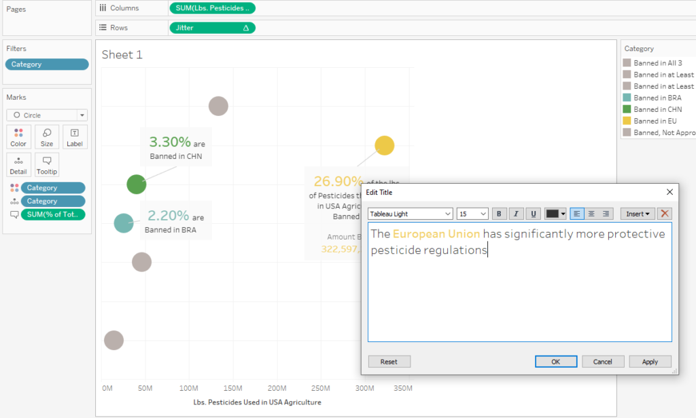
Annotations
Here is often what I see when I create annotations. These items seem to show up by default. In my opinion, they don’t seem to be in easily readable language. For example, reading “25%” is a bit easier on the eyes compared to “% of total = 25.”
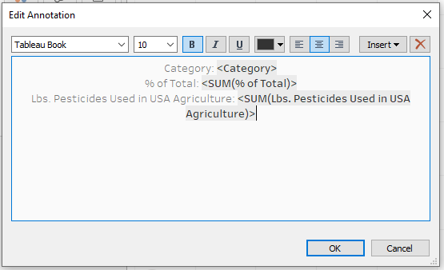
Reformatting the annotation can help it be more readable while also showing pertinent information.
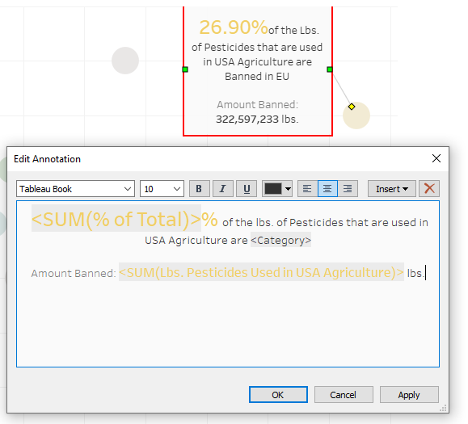
There is a multitude of ways to format and finesse a data visualization before moving it onto a dashboard.
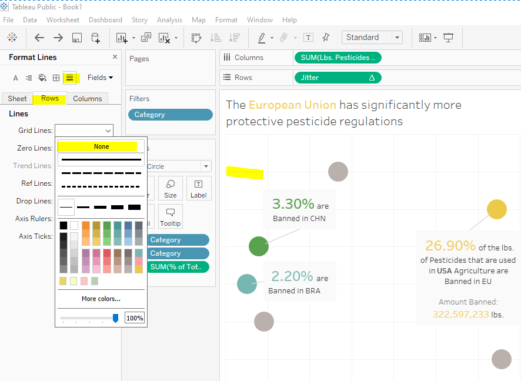
Getting it onto a Dashboard & Publishing
Here’s a quick tip I learned from the last time I worked on a MakeoverMonday data visualization.
I used to get frustrated over the published data visualization not looking like what I intended before publishing. My understanding is that it does this because visualizations can be made to be responsive on different devices. Also, sometimes fonts aren’t supported in every browser.
Specifying the dashboard as “fixed size” allows me to call out the exact size I want the visualization to be.
Different situations may absolutely call for other options. I’m mainly looking for a consistent look after publishing. This little tip easily saved me 15 minutes of fighting with it and republishing it multiple times.
Here is my “final” data visualization shown as a jitter plot that highlights some regions and acknowledges that combined categories exist. Here is the interactive dashboard! It is best viewed on either a tablet, laptop, or desktop computer.
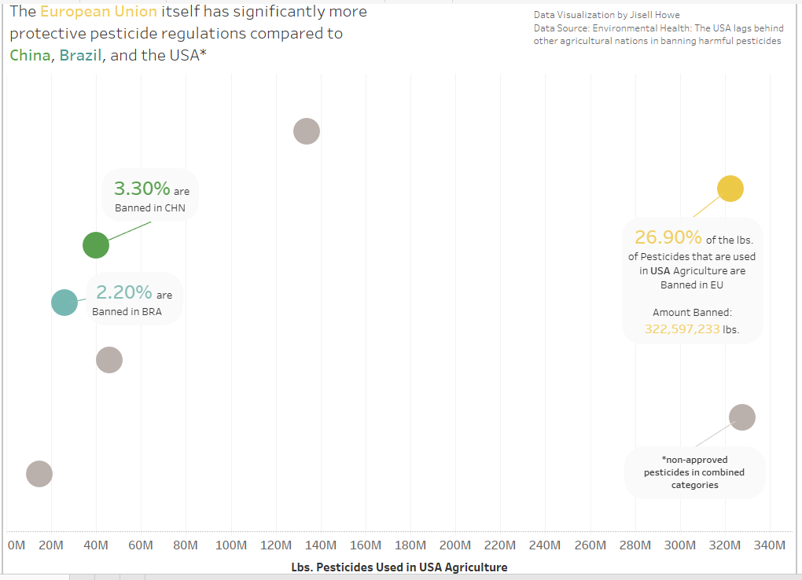
The Takeaway
Creating a jitter plot is just one of the many ways to make your data and insights stand out. Much of what I show in my posts is within the free Tableau Public app. However, I do know that other tools have similar options as well.
To explore this, I recently looked into creating Pivot tables in Excel as well as Microsoft Power BI. I’ve even seen these concepts apply in infographics created with Adobe Illustrator. I hope to touch base with parallels in how to accomplish the same kinds of concepts in future posts. The key takeaway is that you can provide meaningful insight for your stakeholders with various tools. Stay tuned for more posts on how I explore “best practices!”
Sources:
Alexis, C. (2018, November 12). 29 Incredible Stats that Prove the Power of Visual Marketing. Retrieved January 18, 2020, from https://movableink.com/blog/29-incredible-stats-that-prove-the-power-of-visual-marketing/
Barrett, J. (2018, April 12). Up to 73 Percent of Company Data Goes Unused for Analytics. Here’s How to Put It to Work. Retrieved January 18, 2020, from https://www.inc.com/jeff-barrett/misusing-data-could-be-costing-your-business-heres-how.html
Shaffer, J. (2014, August 27). Retrieved January 18, 2020, from https://www.dataplusscience.com/TableauJitter.html
Vogel, D. R., Dickson, G. W., & Lehman, J. A. (1986, June). Retrieved January 18, 2020, from http://misrc.umn.edu/workingpapers/fullpapers/1986/8611.pdf